Schéma Directeur Parcours Patient COVID
Mise en œuvre et fonctionnement d’un centre COVID de tri et de détection dans le cadre d’un suivi global patient.
Ce présent document est interactif, à objectif d’usage collectif, au service de tous les acteurs, est proposé en OPEN SOURCE.
Il est issu d’un travail collégial impulsé et coordonné par OPTION PUBLIC.
Les objectifs, principes et enjeux des centres de tri et de détection
Face à l’ampleur de la pandémie, il est nécessaire d’apporter une réponse commune, cohérente et pertinente. Pour ce faire, plusieurs scénarios sont proposés afin de rendre les services de santé plus efficients.
Le principe est de faire venir vers le Centre Covid les malades ambulatoires qui présentent une possibilité d’être atteints. (Information positive.) Les patients seront adressés par les médecins traitants ou le 15.
Ainsi, il est nécessaire d’opérer une rationalisation du cycle de soin, reprogrammation du médecin de ville, création d’un parcours de soins spécifique afin de limiter la propagation du virus.
- Tri médicalisé : renvoi vers le système libéral des patients négatifs ou à surveiller, soins aux malades graves (circuit-court-urgent : interfaçage avec le 15).
- Organisation d’une filière de surveillance des patients à risque avec téléconsultation, passage de personnels soignants pour prise de constantes et suivi.
- Mise en place de filières d’évacuation vers un centre hospitalier des patients dont l’état se dégrade.
L’efficacité du Centre repose sur la pertinence du tri à l’entrée et sur sa capacité à renvoyer vers la Ville dans les meilleures conditions les personnes qui ne présentent pas de forme sévère. En quelque sorte, il s’agit de mettre en place des chaînes de soins spécialisées:
- Aptes à traiter des cas accidentels urgents exceptionnels.
- Capables d'orienter les patients et d’organiser leur suivi.
- Pouvant renvoyer vers la médecine de ville et ce, dès le premier sas, les cas ne relevant pas de leur mission dans les meilleures conditions grâce au couplage médico-social assuré par le CCSS.
- Mais surtout tendues vers leur mission qui est de métaboliser rapidement et complètement les cas-cibles.
Fiable: Le processus est capable d’accueillir et d’orienter TOUS les patients atteints ou suspectés d’être contaminés. Il précise les conditions de cette fiabilité:
- Une fiabilité réduite compte tenu des contingences administratives actuelles.
- Une fiabilité idéale qui suppose des conditions exorbitantes du droit commun, en précisant les options pouvant être choisies.
- Il ne traite pas du traitement interne à l’hôpital.
Résilient: Le processus se doit d’être scalable:
- En quantité: pourra s’adapter à l’augmentation du nombre de cas en mobilisant tous les moyens possibles dans et hors des systèmes de santé.
- En proposant des options de dérogation exorbitantes du droit commun des normes administratives et de gestion publique de droit commun.
À ce titre, ce guide présente 4 types de structures, le pivot étant bien le principe de la prise en charge en amont pour soulager la pression sur la médecine de ville et hospitalière
- Centre de tri : trier dès l’amont les profils à risque pour optimiser le suivi à domicile ou l’envoi vers l’hôpital.
- Centre de détection : collectiviser dès l’amont le processus de détection pour optimiser la prise en charge de santé.
- Centre de confinement : isoler les personnes détectées, notamment pour éviter une contamination des familles dans le cadre d’un retour à domicile.
- Cellule de crise : organiser, principalement en Mairie ou en interco, l’articulation des moyens physiques et humains pour monter ces centres, les approvisionner, assurer leur régularité administrative, leur fonctionnement financier et exploiter les données relevées.
Chaîne de valeur et Macro – Processus cibles permettant de cadrer les périmètres de responsabilités
1. Schéma Générique du parcours patient
Les étapes « standard » d’un parcours patient sont matérialisées par la chaîne de valeur* présentée ci-dessous.
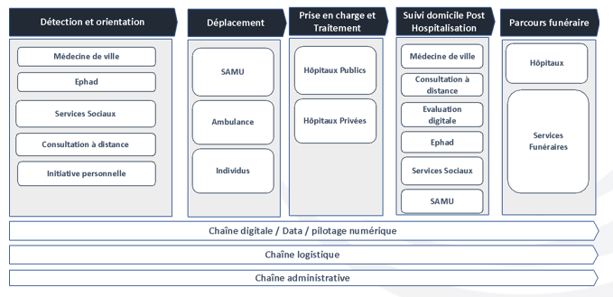Ce modèle servira de socle pour décrire les particularismes proposés de prise en charge particulière du patient COVID.
*Source : capitalisation Portfolio Consulting Group 2020
2. Schéma Spécifique du parcours patient COVID
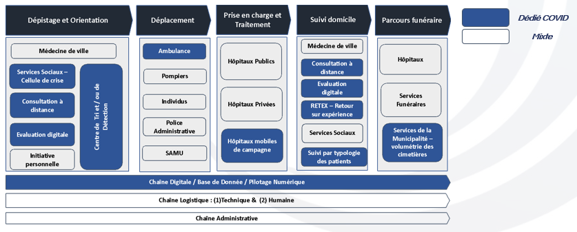Le zoom sur chacun des blocs de la chaîne de valeur COVID permet de définir les processus qui vont conduire au dimensionnement des centres
Description du fonctionnement des centres et de leur articulation dans le circuit global
1. Processus du Centre de TRI
Le centre de TRI se situe en amont du processus global. Son bon fonctionnement optimise le fonctionnement de l’ensemble de la chaîne.
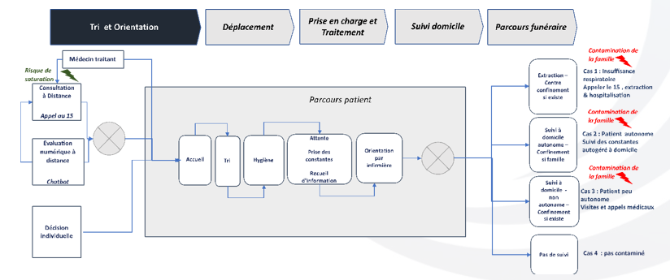Les impacts volumétriques et spécifiques du COVID font porter des risques de fiabilité sur le processus qu’il faut aborder dès sa constitution
Source : capitalisation Portfolio Consulting Group et OPTION PUBLIC 2020
2. Points critiques de fiabilité du Centre de Tri COVID-19
Le parcours optimisé d’un patient COVID est matérialisé par le passage de structures et de modalités spécifiques et ad hoc, ainsi que par un impact volumétrique et particulier sur le dispositif standard.
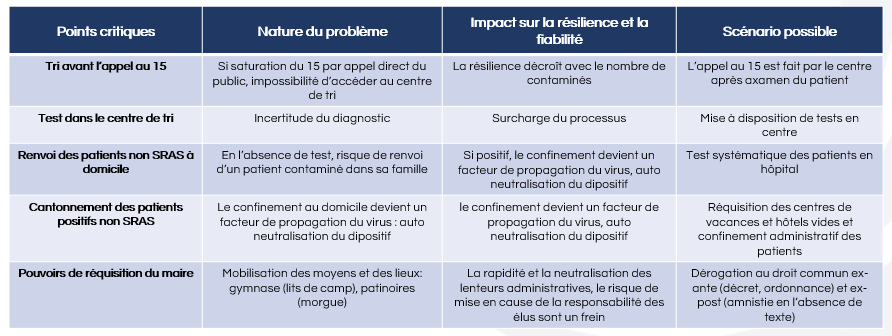3. Processus du Centre de DEPISTAGE
Le centre de DEPISTAGE permet de soulager d’autant plus le fonctionnement de la chaîne en aval. Il demande une structure renforcée en termes de moyens médicaux.
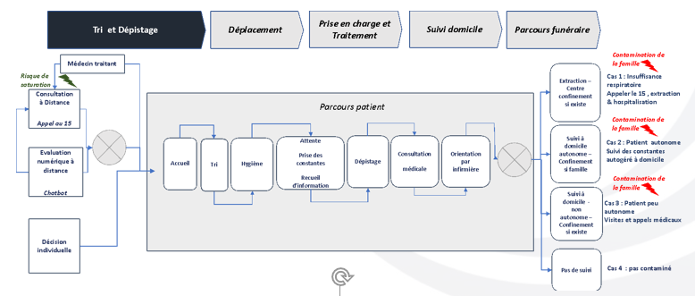Afin de contribuer à réguler les risques de contamination des familles dans le cadre d’un retour à domicile, le dispositif peut être complété d’un centre de confinement
Source : capitalisation Portfolio Consulting Group et OPTION PUBLIC 2020
4. Processus du Centre de Confinement
- Dans la possibilité où l’état de santé des patients nécessite un confinement total, on peut mettre en place un centre de confinement pour contenir l’infection et la maîtriser. Ce dispositif peut empêcher les personnes vivant en communauté de transmettre le virus à leur entourage et d’améliorer la surveillance des malades
- La mise en place de ce dispositif ne peut se faire que s’il y a une politique de dépistage des patients qui est mis en place.
Ce dispositif spécifique applicable en hyper – crise doit faire l’objet d’une description détaillée le cas échéant qui n’est pas l’objet de ce document
Source : OPTION PUBLIC 2020
5. Schéma Générique du parcours patient : Déplacement des patients vers les hôpitaux
Dans le cadre de l’extraction et du déplacement des patients atteints du COVID-19 il serait pertinent de réserver des ambulances dédiées aux patients du Covid -19. Cela permettrait de réduire les risques de transmissions et d’améliorer la célérité des flux.
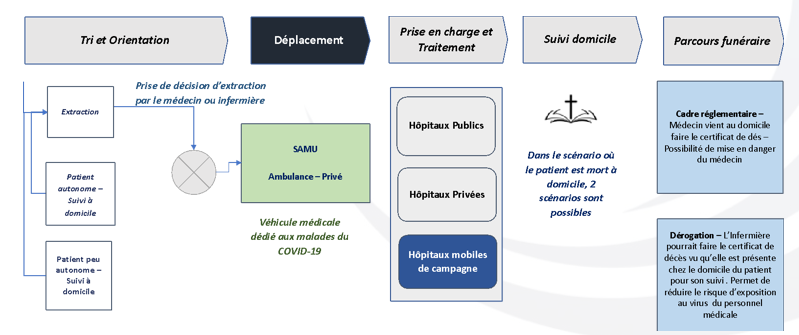L’ensemble du circuit de déplacement POST TRI et DETECTION doit être pensé autant que possible séparé du circuit standard
Source : capitalisation Portfolio Consulting Group et OPTION PUBLIC 2020
6. Schéma Générique du parcours patient : Suivi à domicile
Au sein du suivi à domicile des patients autonomes et peu autonomes qui sont possiblement atteints du COVID -19 , il est nécessaire de mettre en place deux schèmes de suivi des patients selon la typologie : Autonome & Peu Autonome.
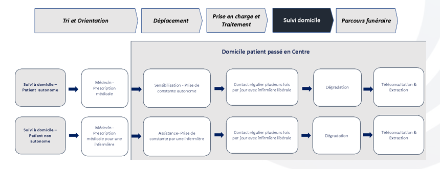L’efficacité du suivi à domicile est renforcée s’il peut prendre appui sur une chaîne numérique permettant une coordination des moyens et des interventions ciblées
Organisation, moyens matériaux et humains du centre de TRI
1. Principes de fonctionnement du centre de TRI
Les personnes qui se présentent sont accueillies par un personnel non médical qui les équipe, les installe dans la chaîne d’attente en respectant les distances de sécurité.
Chaque personne est vue par une infirmière de préconsultation, qui prend sa température et ses constantes à distance, lui pose les questions clés et évalue rapidement si elle est susceptible d’être positive. Plusieurs possibilités se présentent:
- Si on juge que ce n’est pas le cas, on la renvoie avec des renseignements fournis par le référent social dépendant du CCSS qui se trouve sur la chaîne de sortie « négatif ».
- Si son cas est suspect, on la fait passer dans la chaîne dévolue à ces cas. (Identification par marquage coloré.) Le malade est examiné, sort s’il est jugé indemne par une sortie spécifique ou sinon réintroduit dans le circuit Covid.
- Si la personne est potentiellement atteinte du Covid-19, elle est dirigée dans la zone dédiée. (Identification par marquage coloré).
- Si son cas est douteux, on la fait passer dans la chaîne dévolue à ces cas. (Identification par marquage coloré.) Le malade est examiné, et orienté vers 3 circuits différents: un confinement simple avec surveillance autonome et consignes de sécurité, un confinement avec passage infirmier pour surveillance d’un professionnel et évaluation clinique. Evacuation vers un centre hospitalier.
Le centre de tri organise le suivi de patients ainsi qu' une filière d’évacuation de ceux-ci si dégradation de l’état général.
Un circuit-court-urgent est prévu en cas de malaise, de cas qui s’aggraveraient brutalement, avec une zone destinée à recevoir ce type de malade. La liaison avec la régulation15 est prévue dans le schéma de fonctionnement du CCSS.
- Les Cabinets Médicaux d’examen de la zone Covid reçoivent les malades par ordre d’arrivée, un collationnement des renseignements administratifs est prévu.
- Un examen par un médecin équipé de protections préconisées, confirme le diagnostic, évalue la gravité du cas, conduit à une ordonnance préparée, on raye les mentions inutiles (éviter les surcharges).
- Passage au pharmacien lui aussi équipé de protections, recueil des fiches administratives.
- Sortie par un accès spécifique.
- Organisation du suivi des patients soit par télésurveillance soit par passage des IDELS.
- Un couplage permanent avec le CCSS permet de gérer les urgences, les demandes d'hospitalisation, les transports et l'approvisionnement des patients, et de prendre en charge leurs problèmes sociaux.
2. Description détaillée du Centre de Tri et Dépistage
Cette représentation permet de faire le lien entre les fonctionnalités et les moyens à chaque étape.
Remarque : il est considéré que le Dépistage est une fonction complémentaire du Centre de TRI.
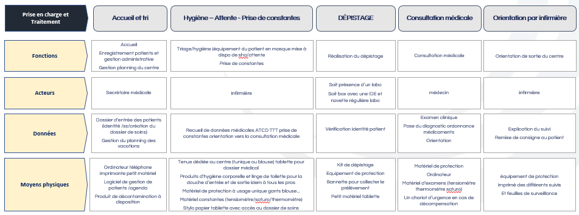La description des moyens par fonction permettra de dimensionner les besoins à chaque étape.
3. Expression des besoins et Organisation Cible du centre de TRI
Principales fonctions du Centre
- Accès au centre
- Matériel
- Fonctionnement interne
- Nettoyage et décontamination des lieux et du mobilier
- Gestion des déchets (ménagers et DASRI)
Comment communiquer vers la population l’existence du centre Covid-19 ? Faire un plan de communication sur l’existence du centre covid-19
- Par qui?
- Quels éléments de langage?
- Moyens de diffusion?
- Sms
- Voie d’affichage administratif
- Distribution dans boîtes aux lettres
- Autres?
- Fréquence de diffusion?
4. Centre Covid-19 – Expression des besoins et Organisation Cible – Des locaux adaptés
Lieu(x) comprenant un espace extérieur et intérieur suffisamment grand pour que les distances de sécurité dites « distanciation sociale » soit à minima respectées.
Lieu(x) accessible(s) facilement en voiture comme à pied, de surcroît également accessible(s) aux personnes ayant un handicap.
Lieu(x) disposant d’un parking de stationnement intégré ou à proximité directe.
Lieu(x) disposant de plusieurs points d’accès permettant de mettre en place, à bonne distance, des flux distincts « entrants » et « sortants » à l’extérieur comme à l’intérieur des locaux:
- Pour les véhicules: un point d’entrée, de stationnement (1 emplacement sur 2 sera vide de tout véhicule) et un point de sortie
- Pour les piétons: un point d’entrée et un point de sortie distinct et suffisamment éloigné l’un de l’autre si ces points ne peuvent être à l’opposé l’un de l’autre. Ces accès piétons doivent disposer de rampes permettant l’accessibilité aux locaux.
Lieu(x) disposant de points d’eau répartis et en nombre suffisant.
Lieu(x) disposant de vestiaires hommes et de vestiaires femmes, de douches et de sanitaires en nombre suffisant.
Lieu(x) disposant d’un espace sécurisé pour stocker le matériel médical (fermeture à clé à minima)
Lieu(x) disposant d’un espace dédié à la collecte et à l’entreposage des déchets ménagers et surtout des DASRI. Cet espace doit être excentré et directement accessible par le personnel de l’entreprise de collecte des déchets.
Lieu(x) disposant d’un espace d’une superficie suffisante, pour respecter la distanciation sociale [à défaut, limiter le nombre de personnes présentes en même temps], qui sera dédié au personnel du centre covid-19 pour les pauses et la restauration.
Un espace dédié au stationnement d’une ambulance pour l’évacuation de patients vers l’hôpital/clinique.
5. Centre Covid-19 – Expression des besoins et Organisation Cible – Organisation d’accès au Centre Covid-19
A chaque point d’accès « entrants », un personnel d’accueil et d’orientation sera présent, idem pour le stationnement un personnel indiquera la place où devra s’effectuer le stationnement du véhicule.
A chaque pont d’accès, un affichage d’informations sera présent.
Les flux « entrants » et « sortants » seront matérialisés par un barriérage en fixe de type « vauban » depuis la périphérie du bâtiment jusqu’aux points d’accès de celui-ci: chaque circuit devra porter un affichage précisant « flux entrant » / « flux sortant »
Dans chacun des circuits, une distanciation sociale devra être respectée par les patients accédant ou sortant du centre Covid-19.
6. Centre Covid-19 – Expression des besoins et Organisation Cible – Matériel nécessaire au fonctionnement du Centre Covid-19
Espace d’accueil et d’attente : des chaises, des tables, des panneaux d’affichage sur pieds destinés à l’information des personnes, des poubelles et leurs sacs, un ordinateur avec une application prenant en compte les informations concernant le patient. Le patient devra remplir une fiche de ce format-là.
Espace d’attente devant le box du médecin : des chaises, des poubelles et leurs sacs.
Espace de consultation privatif ou box « médecin » : pour créer ces box, il faut des parois amovibles ou paravents permettant une consultation en toute confidentialité en l’absence de bureaux préexistants pouvant assurer cette fonction:
- Des chaises (1 pour le médecin, 2 pour les patients)
- Une table de consultation
- Une table et un ordinateur comprenant l’application de gestion du patient
- Une poubelle normale et une poubelle DASRI
Espace de repos et de restauration des équipes du centre covid-19 : tables, chaises, poubelles, points d’eau potable, frigidaire, etc..
7. Matériel à prévoir pour équiper les centres de consultations
- Des paravents pour délimiter les zones / des bandes adhésives de marquage au sol
- Du matériel d’affichage et de signalétique du matériel informatique, une connexion internet, des feuilles de papier, des stylos
- Organisation de l évacuation des déchets
- Organiser un service de blanchisserie pour le linge à laver et des serviettes pour la douche
- Prévoir un local propre pour le stockage de matériel
- Un local « sale » pour entreposer les déchets en attente d’évacuation
- Des imprimantes pour imprimer ordo, consignes de confinement, fiches de suivi etc etc
- Deux lits et un brancard, ainsi que des protections à usage unique, des lits d’examens
- Quatre tables
- Dix chaises
- Cinq poubelles équipées en permanence de sacs (une fois utilisés, les sacs fermés seront ensachés dans un autre sac) ainsi que des containers situés à l’extérieur du bâtiment
- Trois fauteuils destinés aux personnes en attente d’hospitalisation
- Des pulvérisateurs de produit nettoyant ainsi que des lingettes pour assurer la désinfection du matériel
- Du savon liquide, des essuie-mains à usage unique et des solutions hydro alcooliques pour le lavage des mains
- Des gants, des masques FFP2, des lunettes de protection ainsi qu’une sur blouse
- Du matériel pour la prise de constantes qui restera au centre
- Le médecin sera équipé de sa trousse de consultation
8. Centre Covid-19 – Expression des besoins et Organisation Cible – Fonctionnement du Centre Covid-19
Espace d’accueil et d’attente :
- Dans cet espace d’accueil, les personnes sont accueillies par un secouriste qui leur demande de procéder au lavage des mains (point d’eau ou solution hydro alcoolique)
- Ensuite elles attendent de rencontrer une infirmière pour un 1er bilan et prise des informations nécessaires (nom, prénom, etc…)
- Enfin elles sont orientées vers le box de médecin
Espace d’attente devant le box du médecin
Espace de consultation avec le médecin: le médecin renseigne l’application y compris pour le suivi du patient
Sortie du patient à l’issue de la consultation: 3 cas possibles
- Sortie pour confinement à la maison (peu de symptômes, mais avec un suivi sur l’évolution)
- Sortie pour confinement à la maison avec un suivi de type « hospitalisation à domicile »
- Sortie avec évacuation vers un hôpital/clinique
Restauration des équipes du centre covid-19: plusieurs possibilités: à définir
- Repas froids livrés par une société de restauration
- Repas personnels apportés par chacun: l’espace dédié doit être équipé d’un frigidaire
9. Centre Covid-19 – Expression des besoins et Organisation Cible –Nettoyage et décontamination du Centre Covid-19
Les lieux (sanitaires, douches, vestiaires, box..) comme le mobilier, doivent être nettoyés et les surfaces décontaminées:
Il appartiendra à chaque responsable de centre de prévoir ces ressources en fonction des disponibilités locales
- À définir par les gestionnaires du centre ou les élus locaux
- Par qui?
- Personnel de la collectivité ou société de nettoyage
- Fréquence de passage?
- Pour les locaux: 2 fois/jours ou plus selon la superficie des locaux et le nombre de personnes accueillies
- Pour les surfaces: toutes les heures
- Avec quels produits
- À définir sur zone en fonction des ressources nécessaires
- Stockage des produits:
- Où: sur place dans local sécurité
- Prévoir des bacs de rétention si produits dangereux stockés sur place en quantité
Plan physiques de fonctionnement des Centres
1. Plan générique de Centre de détection dans l’urbanisme
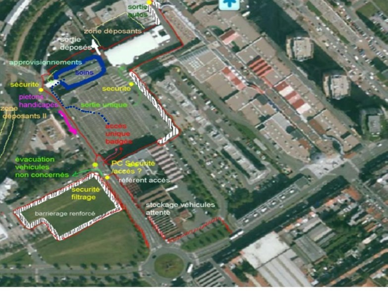2. Plan de déambulation d’un centre de Dépistage
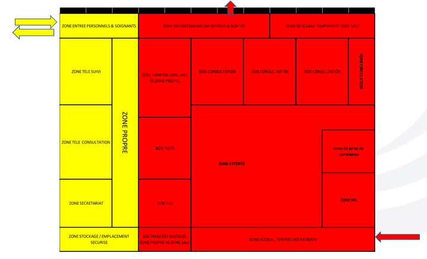3. Plan de déambulation d’un centre de Dépistage
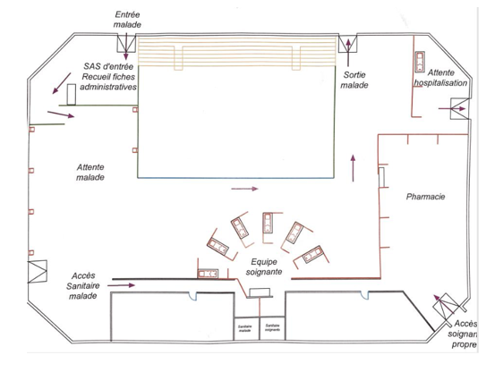4. Plan physique d’organisation du centre de dépistage (exemple)
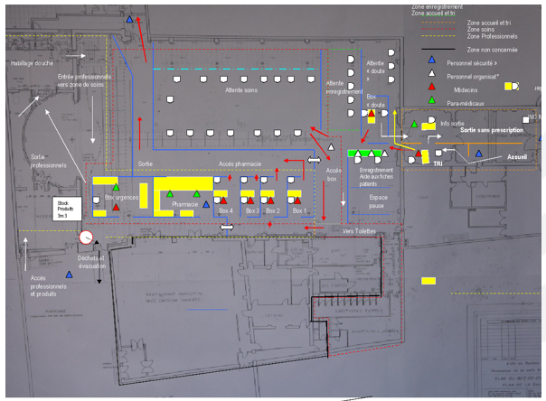Exemples de réalisation et de directives en cours
1. Centre Covid-19 – Exemple de Centre – Centre de consultations pluridisciplinaire à Moissac (82)
Afin de désengorger l’hôpital et de faire en sorte que les personnes pouvant être atteintes par le Covid-19, présentant des symptômes mineurs, ne soient pas en relation avec les autres patients des cabinets médicaux ou les urgences du CHIC, la commune de Moissac à créé un centre de consultations Covid-19.
A l’initiative des médecins du groupe médical Pasteur, près de 90 professionnels de santé (médecins, pneumologues, infirmières, kinésithérapeutes, dentistes, podologues, biologistes, psychologues, personnel de la croix rouge, coordinateur de l’hôpital) et les services de la Mairie ont travaillé́ jour et nuit pour faire naître, en 3 jours, ce centre de consultations.
Voici les données clés :
- Ouverture le 20 mars, tous les jours de 9h à 18h avec un numéro dédié : 3966
- Pas de prise d’initiative sans un avis médical
- 15 à 25 personnes sur place (personnels soignants, personnels désinfectant les box après chaque consultation) et un Centre d’appels constitué de 2 à 4 personnes.
- Capacité de recevoir 250 personnes/jour avec des traducteurs de diverses origines
- Un suivi à J+2,J+7 et J+14 pour les personnes confinées
- Des modèles d’ordonnances pré-remplies
- 1 « fiche patient Covid ARS »
- 1 fiche de liaison standard délivrée à l’accueil de l’hôpital
- Une formation sur l’hygiène de 4H pour les intervenants
2. Centre Covid-19 – Exemple de Centre – Recommandation de l’ARS
L’ARS des Hauts de France a établi le 20 mars des lignes directrices afin de répondre aux besoins des professionnels d’organiser des locaux et des procédures permettant d’isoler la prise en charge des patients potentiellement infectés COVID 19. Cette offre vient en soutien de la prise en charge des patients par leur médecin traitant.
L’adressage sera fait par les SAMU, régulations libérales, plateforme de l’Assurance Maladie, et médecins traitants qui seront informés de l’existence des centres dédiés et de la possibilité́ d’y adresser des patients sur rendez-vous dans la mesure du possible. Le Samu reste le contact privilégié.
Le centre doit être ouvert 7J/7 de préférence de 8H à 20H. Cependant, cela est à moduler selon les besoins du territoire et les capacités d’organisation des professionnels. Possibilité d’envisager des horaires de consultation dédiés aux téléconsultations.
Pour l’équipe soignante, l’ARS recommande 1 médecin généraliste, 1 IDE ou soignant, 1 service d’hygiène et un service d’accueil. Il est demandé à la personne s’occupant de l’accueil, d’envoyer quotidiennement à l’ARS le nombre de consultations réalisées dans la journée ; l’objectif sera d’adapter les organisations au plus près de l’évolution de l’épidémie, à cette adresse mail : ARS-HDF-DEFENSE@ars.sante.fr
Pour l’aménagement des locaux : une salle d’attente où l’on s’assure d’un à deux mètres entre les chaises. Ne pas mettre de magazines, ni prospectus ni jouets. S’il y a 2 locaux de consultation, en fonction de l’activité, possibilité d’alterner leur utilisation pour le temps de la désinfection. En dehors d’une impossibilité de consulter seul, le patient ne doit pas être accompagné pour se rendre à sa consultation. AUCUN DÉPISTAGE NE DOIT ÊTRE REALISÉ EN AMBULATOIRE.
Equipement et procédures d’hygiène : Masques de protection, Lavage des mains au savon ou au soluté hydro alcoolique, Blouse (à laver tous les soirs à 60° ou à remplacer) ou tenue spécifique à mettre en arrivant au centre et à retirer avant de repartir (pour lavage à 60°), désinfection du bureau et de la table d’examen après chaque passage, Bio désinfection 1 à 2 fois par jour.
Dans quelles structures installer le centre ? Dans une maison médicale de garde au sein d’un établissement de santé ou dans un autre local mis à disposition par un établissement de santé. Dans une maison de santé́ pluriprofessionnelle, centre de santé, local dans un hôpital de proximité, dans un local dédié, pouvant s’appuyer sur le maillage sanitaire existant.
Modalités d’accompagnement de l’ARS Hauts de France : En fonction des besoins des patients sur les territoires et des organisations professionnelles, l’ARS Hauts de France pourra accompagner financièrement la mise en place des centres dédiés COVID 19 et des flux dédiés COVID 19 au sein des structures d’exercice coordonné, afin de compenser les frais engagés par les professionnels, de la façon suivante :
- Sur la base d’un fonctionnement 7 jours sur 7, de 8h à 20h, pendant 2 mois :
- Forfait temps soignant : 2 ETP pour un fonctionnement 7/7 de 8h à 20h : 13 500 € pour deux mois
- Forfait accueil / secrétariat : 2 ETP pour un fonctionnement 7/7 de 8h à 20h : 12 000 € pour deux mois
- Forfait hygiène : 2 ETP pour un fonctionnement 7/7 de 8h à 20h : 6 500 € pour deux mois
- Forfait de compensation de participation médicale COVID 19 : 12 000 € par structure pour deux mois.
Fonctionnement d'une cellule de crise
Exemple d’initiative locale - Cellule de Crise en Mairie
Afin de lutter efficacement contre l'épidémie, il est nécessaire de coordonner toutes les forces locales afin de créer de la synergie dans les politiques publiques développées pour lutter contre l’épidémie. Nous proposons la mise en place d’une cellule de crise en Mairie sous le prisme de la méthode du questionnement (Q.Q.O.C.Q). Un guide pour les initiatives locales est disponible ici.
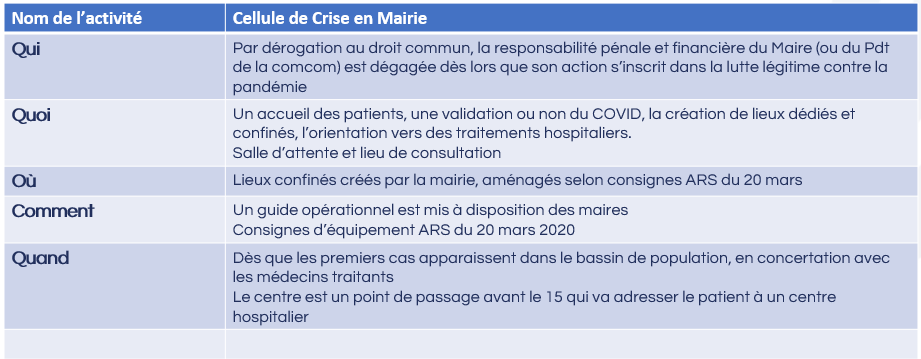Solution numérique de pilotage de l'ensemble du parcours : CRISISOFT
1. Données de référence
Le schéma de données de référence collectées lors de l’accueil est renseigné dans le formulaire consultable sur ce lien : formulaire de données : CENTRE DE TRIE
2. La solution CRISISOFT comme solution numérique
CrisiSoft met à disposition entièrement gratuitement et sans engagement une version simplifiée de sa solution informatique de gestion opérationnelle et coopérative de gestion de crises sanitaires auprès des ARS, des SAMU et des services spécifiques sur le territoire métropolitain et pendant toute la durée de la crise CoVid-19. Notre solution vise à répondre à quelques-unes des problématiques très opérationnelles des futurs centres CoVid-19 et des enjeux de supervision par les collectivités locales et les ARS :
- Sécuriser et garantir l'intégrité de la filière CoVid-19.
- Recenser précisément et en temps réel les patients CoVid-19 en fonction de la gravité des cas, de leur orientation sur les structures spécifiques CoVid-19 (Prélèvement, Suivi…), les services spécialisés, leur confinement à domicile...
- Connaître l'état de l’activité en temps réel de la filière locale, départementale ou régionale et les flux de patients de chacune d’entre elles.
- Échanger et consigner rapidement des informations cruciales avec l'ensemble de la filière via une main-courante partagée.
- Informer rapidement les partenaires, collaborateurs, instances sans saturer les moyens de communication, sans gaspiller de la ressource humaine cruciale et sans alourdir les tâches administratives.
CrisiSoft a mis en place un dispositif exceptionnel pour les accompagner sur la durée de cette crise.
- Fonctionnalités simplifiées : nous avons retravaillé nos interfaces et nos process techniques pour permettre une appropriation immédiate du logiciel par les opérateurs.
- Déploiement rapide : 1 jour maximum par nos équipes à distance.
- Prise en charge de l'ensemble des coûts : licence, hébergement sécurisé des données, configuration et paramétrage.
- Journée d'information/formation.
- Tutoriels d'utilisation.
- Hotline fonctionnelle et technique.
Si la solution devait être retenue dans le cadre ce projet, il faudrait faire évoluer le dispositif pour répondre à l’ampleur des déploiements envisagés et à trouver les ressources financières pour ce faire.